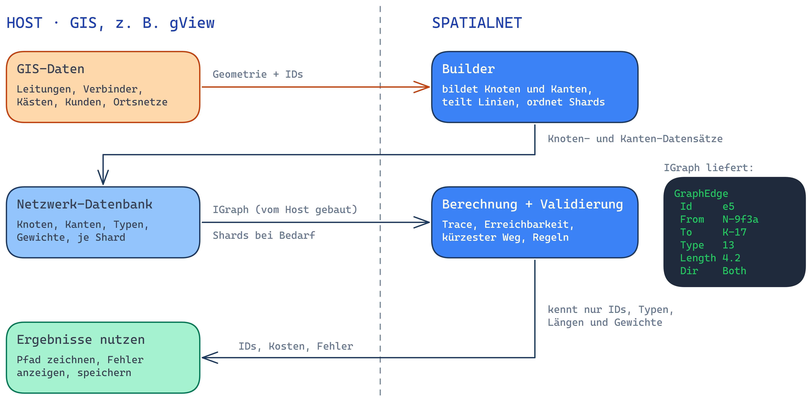

Blatt 1 · Übersicht
Leitungsnetze als Graph
SpatialNET soll aus Leitungen und Punkten im GIS ein Netzwerk bilden, es prüfen und darauf rechnen. Diese Blätter erklären das Konzept für das GIS-Team. Es ist umgesetzt: in SpatialNET (Builder, Suchen, Regeln) und in gView (Carto baut das Netz, der Server sucht darauf), siehe Blatt 8.

IGraph: ein Interface, über das der Host Knoten und Kanten nach ID herausgibt.Die Idee in fünf Sätzen
- Ein Netzwerk besteht aus Knoten (Punkte) und Kanten (Verbindungen zwischen genau zwei Knoten).
- Der Builder erzeugt es aus GIS-Objekten: Leitungen, Verbinder, Kästen, Trafos, Kunden.
- Gespeichert wird es beim Host, zum Beispiel in einer Datenbank, aufgeteilt in Shards, meist ein Shard pro Ortsnetz.
- Berechnungen und Prüfungen holen Knoten und Kanten nach ID, und zwar nur die, die sie wirklich besuchen.
- Das Fachwissen steckt in Typen, Gewichten und Regeln, die der Host festlegt. SpatialNET kennt keine Spannungsebenen, nur Zahlen und Muster.
- Die Ebenen (Mittel-, Niederspannung) kommen aus der ersten Facette des Typs. Der Host kann sie beim Bauen getrennt halten; ein Trafo verbindet sie.
Die Blätter
- Blatt 2Netz bildenWie aus Linien und Punkten Knoten und Kanten werden, wie gefangen und geteilt wird und wie Shards entstehen.
- Blatt 3TypenTypen als Facetten-Array, Muster mit Platzhaltern, mit einem Tester zum Ausprobieren.
- Blatt 4GewichteLänge, Gewichtsarten, Fahrtrichtung und warum der kürzeste nicht der schnellste Weg ist.
- Blatt 5BerechnungenTrace, Erreichbarkeit, kürzester Weg. Schaltzustand und Filter.
- Blatt 6ValidierungWie Regeln aussehen, was sie finden und wie ein Gebiet geprüft wird.
- Blatt 7Ebenen und VerbindenEbenen aus der ersten Facette, getrennte Ebenen beim Bauen, Regeln fürs Verbinden und Teilen.
- Blatt 8Umsetzung in gViewCarto, network.json, NetworkServer und gView.Cmd: wo was eingestellt wird.
Wer macht was
Host z. B. gView
- liefert GIS-Objekte und Ortsnetzpolygone
- legt Typen, Gewichte, Ebenen und Regeln fest
- entscheidet über Verbinden und Teilen und über zusammenfallende Punkte
- speichert Knoten und Kanten, nach Shards
- implementiert
IGraph: Knoten und Kanten nach ID liefern - zeigt Ergebnisse an und speichert sie
SpatialNET Bibliothek
- bildet das Netz: fangen, teilen, Shards zuordnen, und fragt den Host, wo es nicht eindeutig ist
- löst Typmuster auf
- rechnet Trace, Erreichbarkeit und kürzesten Weg
- prüft Regeln
- hält keine Daten und kennt keine Fachbegriffe
Im Betrieb
- NachtsDer Builder baut das ganze Netz neu. Der Host speichert Knoten und Kanten.
- TagsüberBerechnungen und Prüfungen laufen auf dem gespeicherten Netz. Änderungen im GIS sind erst am nächsten Tag drin.
- Für ein GebietSuchen und Prüfregeln lassen sich auf ein Gebiet beschränken, z. B. ein Ortsnetz oder einen Ausschnitt.
Begriffe
| Begriff | Bedeutung |
|---|---|
| Echter Knoten | Ein GIS-Punkt: Kasten, Trafo, Schalter, Kunde. Hat eine ID und einen Typ vom Host. |
| Hilfsknoten | Entsteht, wo Linienenden aufeinandertreffen, ohne dass dort ein Punkt liegt. Untypisiert, mit getrennten Ebenen ein Hilfstyp pro Ebene. |
| Alias | Ein Punkt, der mit einem anderen an derselben Stelle zu einem Knoten zusammengeführt wurde (z. B. ein Kunde auf seinem Kasten). Findet weiter seinen Knoten. |
| Ebene (Tier) | Ein Wert der ersten Facette, z. B. Mittelspannung. Suchen lassen sich auf Ebenen beschränken. |
| Verbindungsregel | Legt beim Bauen fest, welche Knoten welche Linien teilen oder an ihren Enden anschließen dürfen. |
| Kante | Verbindung zwischen zwei Knoten. Ein Teil einer GIS-Linie oder die ganze Linie. |
| Teilkante | Stück einer Linie, die der Builder an einem Punkt oder T-Anschluss geteilt hat. |
| Facette | Eine Position im Typ-Array, z. B. Ebene, Objektart, Bauart. |
| Muster | Typbeschreibung mit Platzhaltern, z. B. [*, Kastenverbinder, *]. |
| Shard | Paket von Knoten und Kanten, das der Host am Stück lädt. Meist ein Ortsnetz. |
| Normalschaltzustand | Gesperrte Knoten und deaktivierte Kanten, wie im GIS erfasst. Im Netz gespeichert. |
| Abweichung | Ein Schaltzustand, der nur für eine Berechnung gilt, z. B. „Schalter 4711 heute offen“. |
| Startmenge | Die Knoten, bei denen eine Berechnung oder Prüfung beginnt. Liefert immer der Host. |
Was bewusst nicht dazugehört
- Abbiegeverbote und zeitabhängige Gewichte (Routing im Straßenverkehr)
- Lastfluss und andere elektrische oder hydraulische Simulation
- Fachattribute wie Querschnitt oder Sicherungsgröße; die bleiben im GIS
- Datenhaltung; SpatialNET speichert nichts
Was umgesetzt ist
Jede Stufe hat eine eigene Architekturentscheidung (ADR) in SpatialNET.
- ADR 0049, Modell:
IGraph, Typen und Muster, Gewichte, Schaltzustand, ein Netz im Speicher für Tests, Erreichbarkeit und kürzester Weg. - ADR 0050, Builder: fangen, teilen, IDs, Shard-Polygone.
- ADR 0051, Tracing: Quellen, Senken, Versorgung, Mehrfachversorgung.
- ADR 0052, Regeln: Regelschreibweise und Validierung.
- ADR 0054, zusammenfallende Knoten: der Host wählt einen Gewinner, die anderen Punkte werden Aliase.
- ADR 0055, Verbinden und Teilen: Hilfstypen, getrennte Ebenen, Regeln des Hosts.